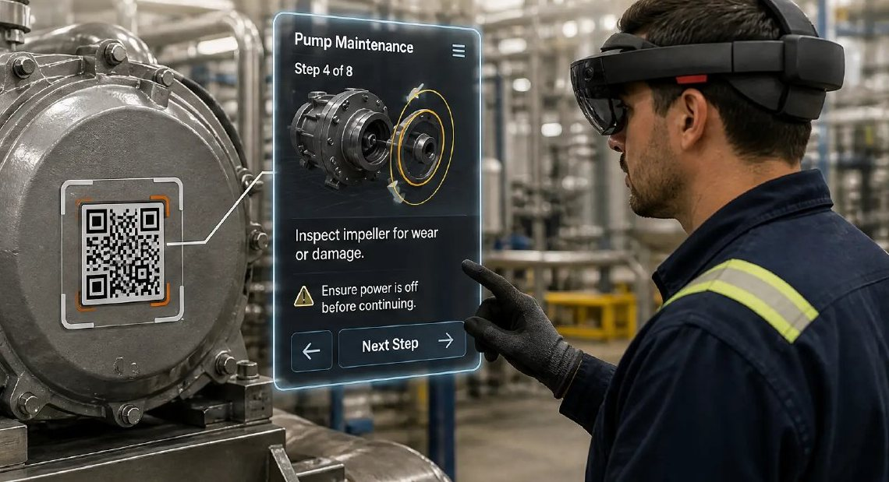
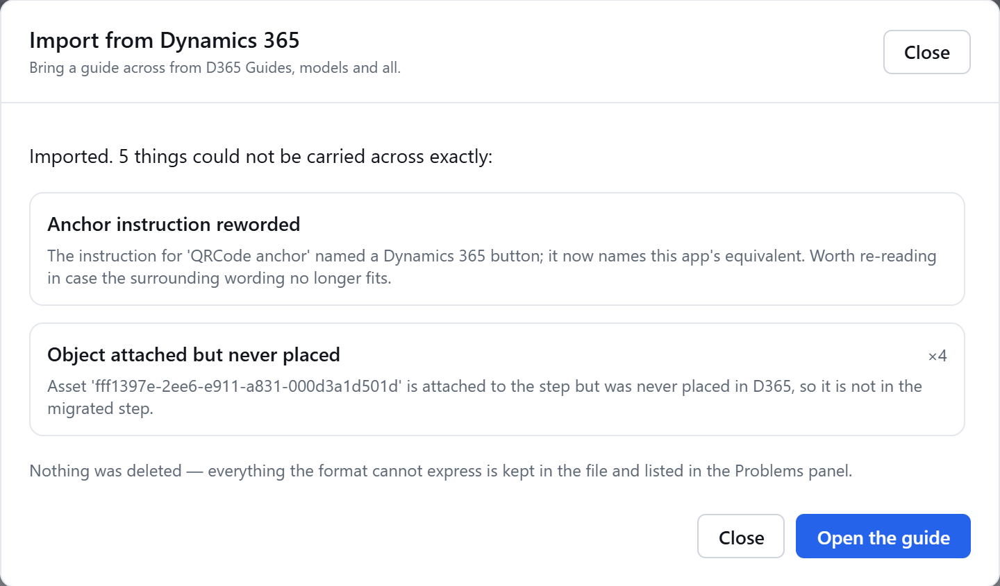
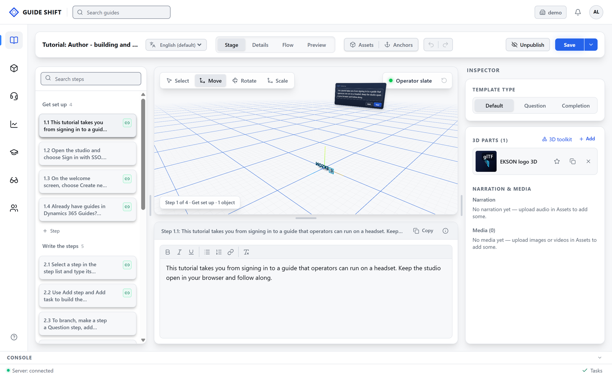
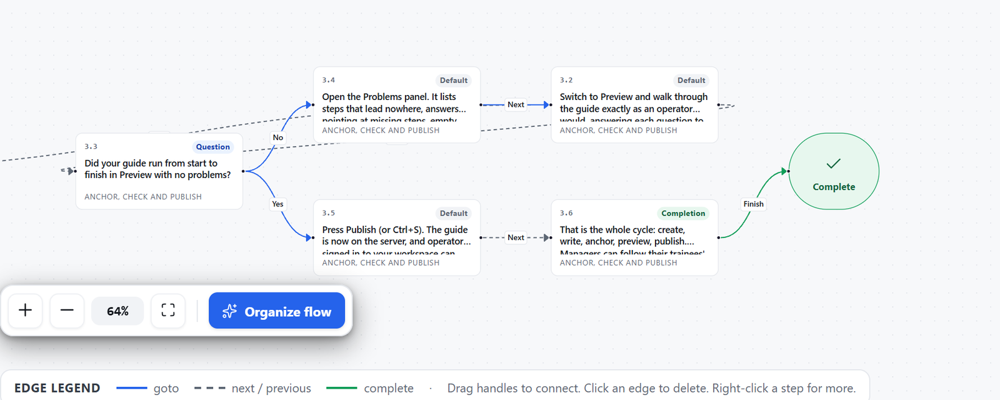
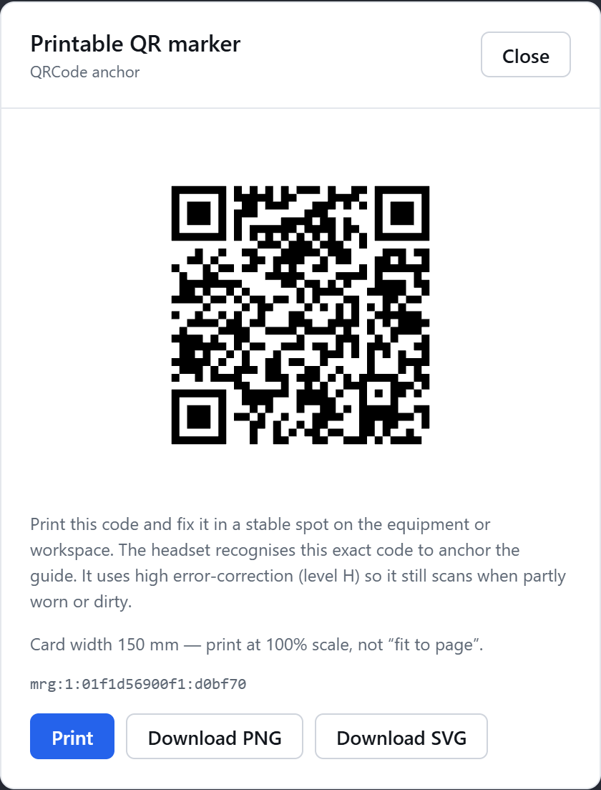
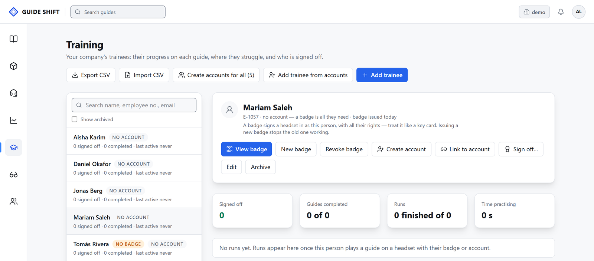

Training records and badges
Know who is ready
- Every run recorded
- No accounts needed for trainees
- QR badges
- Sign-off and CSV export
D365 Guides support ends 31 Dec 2026 Plan your move
Bring your guides across. Edit them in the browser. Run them on your headsets.

Your D365 guides come across intact.
Quest 3, HoloLens 2 and PICO 4 Enterprise.
Hosted by EKSON or on your own servers.
Why now
After 31 December 2026, Dynamics 365 Guides gets no more updates or support.
HoloLens 2 discontinued
Azure Spatial Anchors retired
New subscriptions stopped
Support ends
Starting from paper or PDFs? Guide Shift works for you too.
One environment
Steps, branching, 3D parts and video.
Steps appear on the machine, even offline.
Scan a printed code to place the guide.
Badges, sign-off and CSV export.
Experts see and draw in the technician’s view.
See where people struggle.
Unlimited languages; apps in English and Arabic.
Authors, managers, experts and trainees.
Moving from Dynamics 365 Guides
Save your guides from D365 as .guide files.
Upload them to the studio.
Anything to review is listed. Nothing is deleted.
No Microsoft credentials needed.

The studio


On the shop floor

Training and support
Training records and badges
Remote Assist on Meta Quest 3

Deployment options
Same product either way. You choose where it runs.
Both: Open formats, no lock-inOffline playback
Coming from D365 Guides
| In Dynamics 365 Guides | In Guide Shift |
|---|---|
| Guides and their content | Imported as they are |
| PC authoring app | Browser studio |
| HoloLens operator app | Quest 3, HoloLens 2, PICO 4 Enterprise |
| Anchors | Printable QR codes |
| Guides analytics | Analytics |
| Dynamics 365 Remote Assist | Remote Assist on Quest 3 |
| Dataverse environment | Your own workspace |
Who it’s for
Assembly and quality checks
Inspections and repairs
Safety-critical procedures
Hands-on technical courses
Emergency procedures
Questions
Yes. Export them from D365 and import them into the studio.
No. HoloLens 2 is supported, along with Quest 3 and PICO 4 Enterprise.
Not on your own servers. Downloaded guides also play offline.
You do. Guides use open formats, so there is no lock-in.
No. They sign in with a QR badge.
No. We only need the exported file.
See it with your own guides
We’ll set up a demo workspace for you.